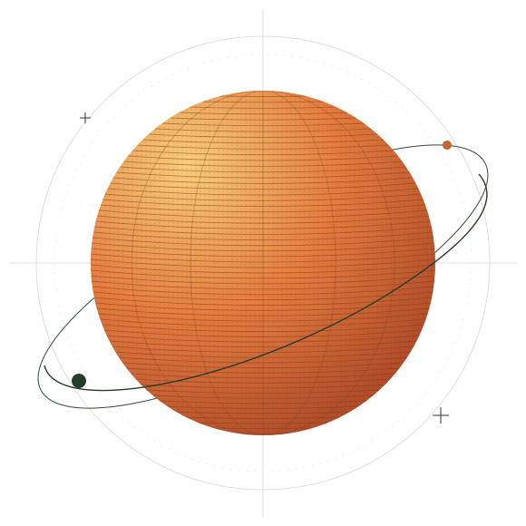

An open inquiry into a world of enough
We have
more than
enough.
So why do so many go without? Explore what humanity produces, what people need, and the distance between the two.

All of us.A question of resources.
A question of access.
01 / The arithmetic
Start with
what exists.
A global total divided by people. A useful starting point, with real limits. Choose a resource to look closer.
Food / Global dietary energy supply
Enough calories.
Unequal access.
The global average food supply is above this project’s calorie reference. That does not mean everyone can afford a nutritious diet.
FAO Food Balance Sheets · 2023 data ↗global supply / calorie reference
Per person, per day · linear scale
Food supply is not intake. Calorie needs vary with age, body size and activity; the 2,100 kcal figure is a project reference, not a universal requirement. Supply already excludes feed and post-harvest losses.
Read the reference and its assumptions ↗Sources use different years. Where needed, calculations use the project’s rounded 2024 population of 8.2 billion. Read the methodology ↗
02 / The distance between enough and access
An average
doesn’t feed
a person.
Resources can exist.
People can still go without.
Geography, infrastructure, conflict, affordability and political choices shape who gets what. Global arithmetic opens the question. It doesn’t settle how we get resources into people’s hands.
See how it differs by country Read the strongest counterarguments03 / Follow your curiosity
Go beyond
the headline.
Learn the argument. Change the assumptions. Look for the places it holds—and the places it breaks.
The interactive introduction / About 8 minutes
A different way
to see enough.
Seven short lessons. Make a guess, see the numbers,
and build your own understanding.
The full argument
The arithmetic, the evidence and the honest limits.
Beyond the global average
Explore country-level data and compare the differences.
Run your own numbers
Move the redistribution dials. Inspect what changes.
What countries have tried
Eleven country case studies, including their counter-narratives.
Waste heat. Drinking water.
A design hypothesis, open calculations and a testable next step.
To whoever can act
An open letter about what we choose to make possible.
An open project, in every sense.
Take the data.
Question everything.
No paywall. No account. Public-domain work you can read, reuse, challenge and improve.
Explore the source